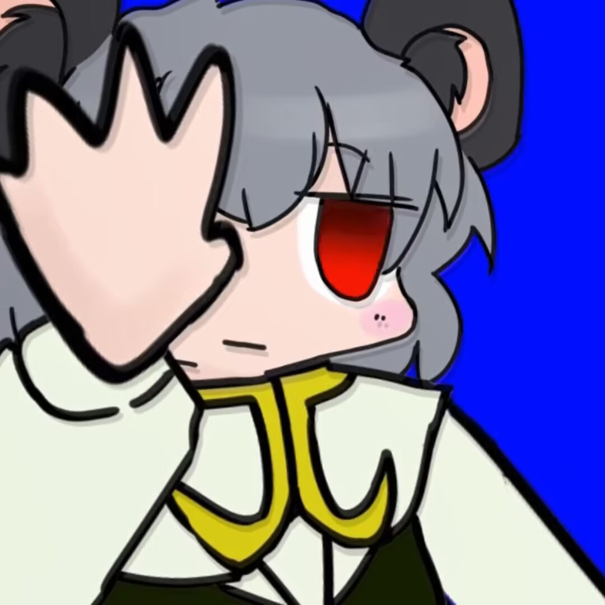
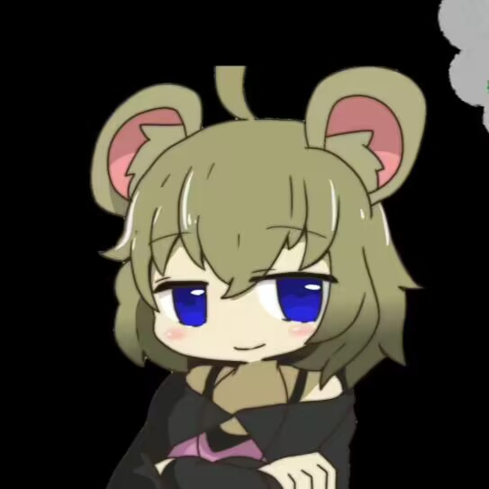
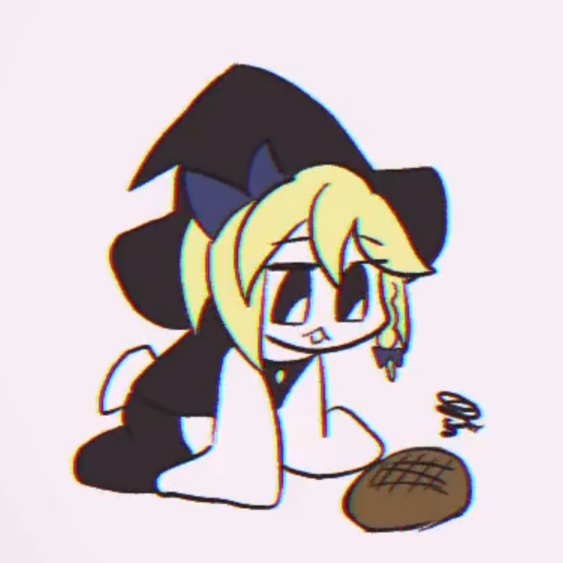

尻行NYN.BB sm31904350
跑步的NYN姐贵BB+一直的惯例 走るNYN姉貴BB+いつもの 作者：加藤
ひょうきんな踊りを踊るNYN姉貴BB https://m.youtube.com/watch?v=l-3xtc8xaVk
扭来扭去的NYN姐贵 sm33797305 作者：乳酸菌
Live2D化NYN姐贵.GB ウゴウゴNYN姉貴.GB 作者：おもむき
icg姐贵的妄想税 待补充。
ICG Drum
Kuso☆三期中的拍桌音效被大量应用于曲奇音MAD中。
本人的音声也被做成一整套打击乐器：
ICG鼓套装BB.m4a1 ICGドラムキットBB.m4a1 作者：しりり
しなないで
ガバ物理姐姐
从ICG姐贵的料理万岁.phun、ICG姐贵做蛋糕等用Algodoo[1]创作的剧场，衍生出了风行一时的ガバガバ物理演算シリーズ。
Algodoo中的助推器因此被作为ICG的常见neta之一融入了设定。
by LittleBitHarsh——
I play a PPAP
补档，之前做的easter声剧中kofji的PPAP，在N好像破了10W再生（
I play a sit BB
补档，I play a shit。
I play a reapist BB
补档，raperdesu
ni day ce
新人教育☆ sm31261492 作者：加藤 兄贵
初BB剧场です
用MGR的声音作为人力音源的音MAD作品。例如：
.☆.kurage sm32508189 作者：抹茶モナカ
MGR姐贵的天真烂漫机能 sm31630546 作者：やまぶし
甚至开发出了其它语种的MGRoid：
英语MGRoid：
Cookie☆Along.otomad
クッキー☆アロング、あるいは2010年の低品質ボイスドラマとこれに続く動画群.otomad
西语MGRoid：
https://www.youtube.com/watch?v=czZ12uuuSf8
俄语MGRoid：
苏维埃☆ ソビエトマーチ☆
汉语MGRoid：
孤儿乐园☆
【MGRoid】《智取威虎山》选段：打虎上山作者：Eroluy
贵州和广西相比☆.mgr作者：Eroluy
【MGRoid】两只老虎作者：弗利沙漠

【クッソー☆絵本】偽NYNのホットケーキ
以对NYN姐贵的声音模仿确立了独立于NYN的形象，伪NYN姐贵的一人全役声剧。
熟肉生肉 にょんのホットケーキ.nyn 作者：青目ねずみ
NYN的热蛋糕.nyn
伪NYN姐贵的起源
原简介↓
初投稿です。
后半はRRM姊贵やICG姊贵がいないのでカットしました。
“ないです”と“すきなの”: sm30743911/虽然没有，但是很喜欢
元动画様:sm30246491/COOKIE☆绘本『NYN的热松饼』

YUH（ゆうひぃ）
霧雨魔理沙（その4）役。ボイスドラマ内では後半、めぐる魔理沙と共に４番目の魔理沙として登場。めぐるとの仲の良さから双子魔理沙とも呼ばれる。特徴的な表情と萌え袖が可愛らしい。にも拘らず静画ではモンスター化したホラーゆうひぃが主流になっている。
これまでのクッキー☆本編を全て視聴したりとクッキー☆に対する受容度は極めて高く、クッキー☆民とのコラボツイキャスや自ら東方ボイスドラマを企画したりと色々とクッキー☆活動をしている（なお中断してしまった模様）。当初はこの積極的な姿勢や表裏無くはっきりを物言う姿勢が歓迎されたが、徐々に彼女はモンスターとして化けの皮を剥がしてゆくことになる。